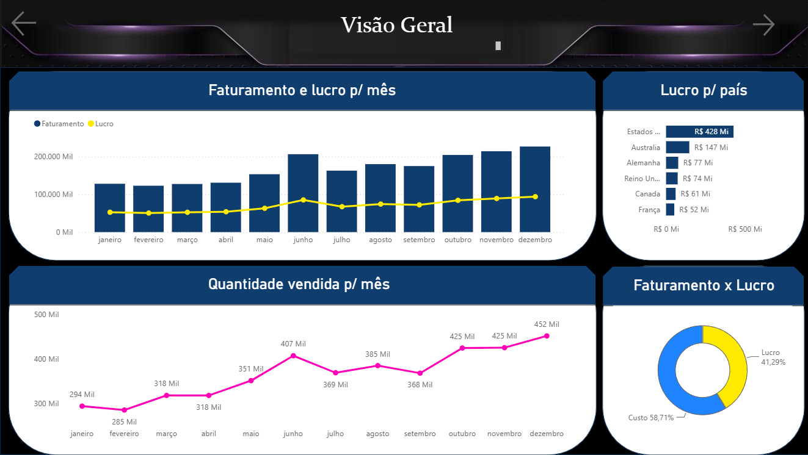
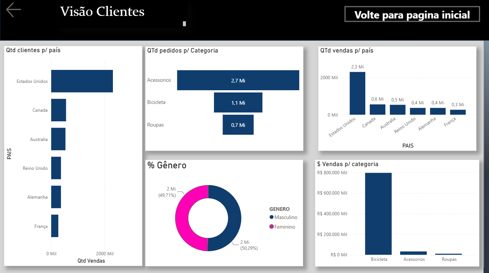

Dashboard Comercial
O problema
Consolidar dados de vendas espalhados em várias tabelas (pedidos, clientes, produtos, categorias, geografia) em uma visão única de receita, margem e lucro, navegável por país, mês e categoria de cliente.
A lógica por trás
Criei uma view SQL própria ("RESULTADO_AWD") que une a tabela fato de vendas a 5 tabelas de dimensão, calculando o lucro por pedido diretamente na consulta. Essa view alimenta o modelo do Power BI, evitando que os cálculos de negócio fiquem espalhados em medidas soltas.
No Power BI, o modelo foi organizado em duas páginas:
- Geral — receita, margem e lucro por país e por mês, para leitura executiva.
- Clientes — vendas segmentadas por país, gênero e categoria de produto, para leitura comportamental.
Consulta SQL (view)
View criada no banco para consolidar a fato de vendas com as 5 dimensões antes de chegar no Power BI:
CREATE OR ALTER VIEW RESULTADO_AWD AS
SELECT
fis.SalesOrderNumber AS 'Nº PEDIDO',
fis.OrderDate AS 'DATA PEDIDO',
dpc.EnglishProductCategoryName AS 'CATEGORIA EM INGLES',
dc.CustomerKey AS 'ID CLIENTE',
dc.FirstName + ' ' + dc.LastName AS 'NOME',
dc.Gender AS 'GENERO',
dg.EnglishCountryRegionName AS 'PAIS',
fis.OrderQuantity AS 'QUANTIDADE PEDIDOS',
fis.UnitPrice AS 'PREÇO UNITARIO',
fis.TotalProductCost AS 'CUSTO TOTAL PRODUTO',
fis.SalesAmount AS 'PREÇO VENDA',
fis.SalesAmount - fis.TotalProductCost AS 'LUCRO VENDA'
FROM FactInternetSales fis
INNER JOIN DimProduct dp
ON fis.ProductKey = dp.ProductKey
INNER JOIN DimProductSubcategory dps
ON dps.ProductSubcategoryKey = dp.ProductSubcategoryKey
INNER JOIN DimProductCategory dpc
ON dpc.ProductCategoryKey = dps.ProductCategoryKey
INNER JOIN DimSalesTerritory dst
ON fis.SalesTerritoryKey = dst.SalesTerritoryKey
INNER JOIN DimGeography dg
ON dst.SalesTerritoryKey = dg.SalesTerritoryKey
INNER JOIN DimCustomer dc
ON fis.CustomerKey = dc.CustomerKey;Medidas DAX
A maior parte da lógica de negócio já fica resolvida na view SQL, então o modelo usa poucas medidas DAX, só para agregações finais:
- Faturamento —
SUMX(Consulta1, [PREÇO UNITARIO] * [QUANTIDADE VENDAS]). Usa SUMX porque precisa multiplicar preço por quantidade linha a linha, pedido por pedido, antes de somar o total. - Qtd Vendas —
COUNT(Consulta1[N° PEDIDO]). Conta o número de pedidos, servindo como indicador de volume de vendas. - Preço Venda —
SUM(Consulta1[PREÇO VENDA]). Soma total do preço de venda. - Preço Unitário —
SUM(Consulta1[PREÇO UNITARIO]). Soma total do preço unitário, usado de apoio em outras análises.
Print do relatório

